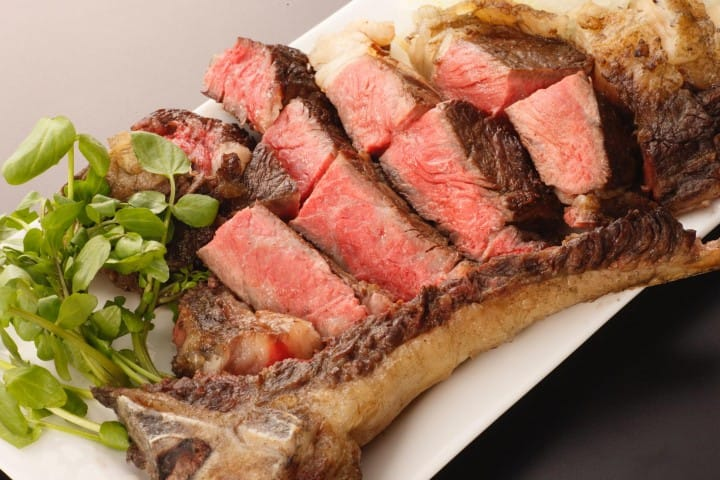

いわて短角牛

脂肪分が少ないヘルシーな赤身肉で、とろけ茹でたてのそばをおいしく、
たくさん食べていただこうというるような霜降りとはまったく違う、
かみしめる食感と肉の旨さを味わう牛肉です。赤身が多いから
量を食べても飽きがこない旨味が特徴です。
グルメ情報
ジャンル
グルメ
所在地
盛岡市菜園1-4-10 第ニ産業会館１階
電話番号
019-606-3739
営業時間
月～土、祝前日
11:30～14:00
17:00～22:00
[アクセス経路]
ルート1:盛岡駅 → 【徒歩15分】 銀河離宮
ルート2:盛岡IC → 【車20分】 銀河離宮